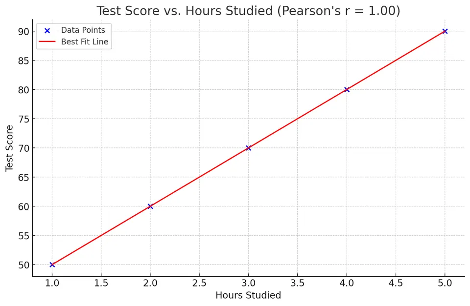

Correlation is a statistical measure that quantifies the strength and direction of the linear relationship between two variables. It is a fundamental concept in statistics, enabling researchers and analysts to understand how one variable may predict or relate to another. The most commonly used correlation coefficients are the Pearson correlation coefficient and the Spearman rank correlation coefficient.
Important Note: Correlation does not imply causation. A high correlation between two variables does not mean that one variable causes changes in the other.
The Pearson correlation coefficient measures the strength and direction of the linear relationship between two continuous variables. It is sensitive to outliers and assumes that the relationship is linear and that both variables are normally distributed.
The Pearson correlation coefficient $r$ is defined as:
$$ r = \frac{\text{Cov}(X, Y)}{\sigma_X \sigma_Y} $$
Where:
Alternative Formula:
$$ r = \frac{\sum_{i=1}^{n} (X_i - \bar{X})(Y_i - \bar{Y})}{\sqrt{\sum_{i=1}^{n} (X_i - \bar{X})^2} \sqrt{\sum_{i=1}^{n} (Y_i - \bar{Y})^2}} $$
Where:
General Guidelines:
| Correlation Strength | Range (r) |
|---|---|
| Strong Positive Correlation | 0.7 ≤ r ≤ 1.0 |
| Moderate Positive Correlation | 0.3 ≤ r < 0.7 |
| Weak Positive Correlation | 0 < r < 0.3 |
| No Correlation | r = 0 |
| Weak Negative Correlation | -0.3 < r < 0 |
| Moderate Negative Correlation | -0.7 < r ≤ -0.3 |
| Strong Negative Correlation | -1.0 ≤ r ≤ -0.7 |
Consider the following data on the number of hours studied ($X$) and test scores ($Y$):
| Observation ($i $) | Hours Studied ($X_i$) | Test Score ($Y_i$) |
|---|---|---|
| 1 | 1 | 50 |
| 2 | 2 | 60 |
| 3 | 3 | 70 |
| 4 | 4 | 80 |
| 5 | 5 | 90 |
$$ \bar{X} = \frac{1}{5}(1 + 2 + 3 + 4 + 5) = \frac{15}{5} = 3 $$
$$ \bar{Y} = \frac{1}{5}(50 + 60 + 70 + 80 + 90) = \frac{350}{5} = 70 $$
Compute $(X_i - \bar{X})$, $(Y_i - \bar{Y})$, and their products:
| $i $ | $X_i$ | $Y_i$ | $X_i - \bar{X}$ | $Y_i - \bar{Y}$ | $(X_i - \bar{X})(Y_i - \bar{Y})$ | $(X_i - \bar{X})^2 $ | $(Y_i - \bar{Y})^2 $ |
|---|---|---|---|---|---|---|---|
| 1 | 1 | 50 | -2 | -20 | 40 | 4 | 400 |
| 2 | 2 | 60 | -1 | -10 | 10 | 1 | 100 |
| 3 | 3 | 70 | 0 | 0 | 0 | 0 | 0 |
| 4 | 4 | 80 | 1 | 10 | 10 | 1 | 100 |
| 5 | 5 | 90 | 2 | 20 | 40 | 4 | 400 |
| Sum | 100 | 10 | 1000 |
$$ r = \frac{\sum_{i=1}^{5} (X_i - \bar{X})(Y_i - \bar{Y})}{\sqrt{\sum_{i=1}^{5} (X_i - \bar{X})^2} \sqrt{\sum_{i=1}^{5} (Y_i - \bar{Y})^2}} = \frac{100}{\sqrt{10} \times \sqrt{1000}} $$
Compute the denominators:
$$ \sqrt{10} \approx 3.1623, \quad \sqrt{1000} \approx 31.6228 $$
Compute $r$:
$$ r = \frac{100}{3.1623 \times 31.6228} = \frac{100}{100} = 1 $$

Pearson's $r = 1 $ indicates a perfect positive linear relationship between hours studied and test scores. As the number of hours studied increases, the test score increases proportionally.
The Spearman rank correlation coefficient measures the strength and direction of the monotonic relationship between two ranked variables. It is a non-parametric measure, meaning it does not assume a specific distribution for the variables and is less sensitive to outliers.
The Spearman correlation coefficient $\rho$ is defined as:
$$ \rho = 1 - \frac{6 \sum_{i=1}^{n} d_i^2}{n(n^2 - 1)} $$
Where:
Using the same dataset:
| Observation ($i $) | Hours Studied ($X_i$) | Test Score ($Y_i$) |
|---|---|---|
| 1 | 1 | 50 |
| 2 | 2 | 60 |
| 3 | 3 | 70 |
| 4 | 4 | 80 |
| 5 | 5 | 90 |
Since the data is already ordered, the ranks correspond to the order of observations.
| $i $ | $X_i$ | Rank $R(X_i)$ | $Y_i$ | Rank $R(Y_i)$ |
|---|---|---|---|---|
| 1 | 1 | 1 | 50 | 1 |
| 2 | 2 | 2 | 60 | 2 |
| 3 | 3 | 3 | 70 | 3 |
| 4 | 4 | 4 | 80 | 4 |
| 5 | 5 | 5 | 90 | 5 |
Calculate $d_i = R(X_i) - R(Y_i)$:
| $i $ | Rank $R(X_i)$ | Rank $R(Y_i)$ | $d_i$ | $d_i^2 $ |
|---|---|---|---|---|
| 1 | 1 | 1 | 0 | 0 |
| 2 | 2 | 2 | 0 | 0 |
| 3 | 3 | 3 | 0 | 0 |
| 4 | 4 | 4 | 0 | 0 |
| 5 | 5 | 5 | 0 | 0 |
| Sum | 0 |
$$ \rho = 1 - \frac{6 \times 0}{5(5^2 - 1)} = 1 - 0 = 1 $$
Spearman's $\rho = 1 $ indicates a perfect positive monotonic relationship between hours studied and test scores.
For two random variables $X$ and $Y$ with positive variances, the population correlation coefficient $\rho_{XY}$ is defined as:
$$ \rho_{XY} = \frac{\text{Cov}(X, Y)}{\sigma_X \sigma_Y} $$
Where:
| Property | Description |
|---|---|
| Range | $-1 \leq \rho_{XY} \leq 1$ |
| Symmetry | $\rho_{XY} = \rho_{YX}$ |
| Dimensionless | The correlation coefficient is unitless. |
| Linearity | If $\rho_{XY} = \pm 1 $, $Y$ is a perfect linear function of $X$. |
| Independence | If $X$ and $Y$ are independent, $\rho_{XY} = 0$. However, $\rho_{XY} = 0$ does not imply independence unless the variables are jointly normally distributed. |
Suppose $X$ and $Y$ are random variables with the following properties:
Compute the correlation coefficient:
$$ \rho_{XY} = \frac{\text{Cov}(X, Y)}{\sigma_X \sigma_Y} = \frac{6}{2 \times 4} = \frac{6}{8} = 0.75 $$
Interpretation:
If these assumptions are violated, Pearson's $r$ may not be an appropriate measure of correlation.